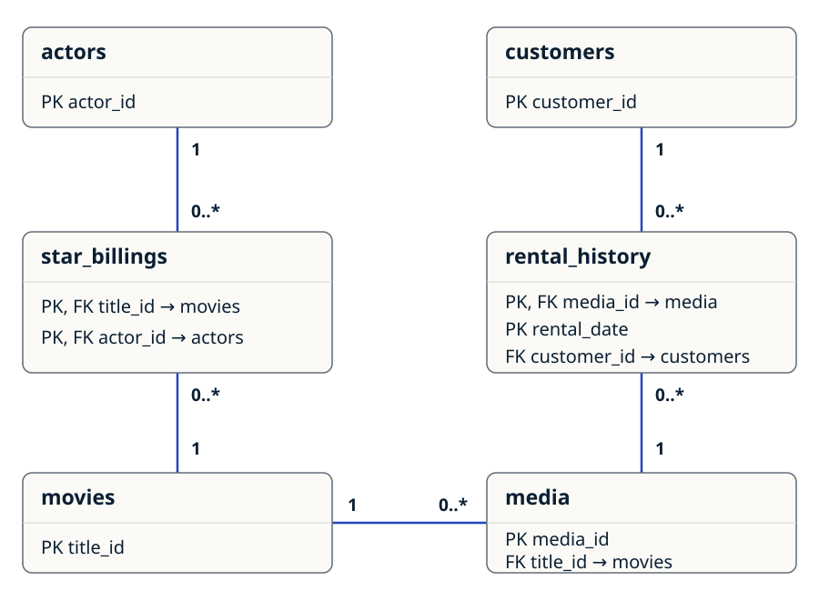

Database design
A movie title and a rentable copy are different records.
A title can have several physical copies, each with its own identifier and format. Rental history connects a particular copy to a customer and records checkout and return dates.
A separate casting table links actors to titles. Primary keys identify records; foreign keys keep those relationships tied to existing records.
Six tables and five relationships.

Keys and relationships in text
actors- PK:
actor_id. One actor can have zero or morestar_billings. customers- PK:
customer_id. One customer can have zero or morerental_historyrecords. star_billings- Composite PK:
(title_id, actor_id). Both are required FKs, linking each row to exactly one movie and one actor. rental_history- Composite PK:
(media_id, rental_date). Required FKs:media_idandcustomer_id, linking each rental to exactly one copy and one customer. movies- PK:
title_id. One movie can have zero or moremediacopies and zero or morestar_billings. media- PK:
media_id. Required FK:title_id, linking each copy to exactly one movie. A copy can have zero or morerental_historyrecords.
All five foreign keys are NOT NULL. The schema does not require a parent record to have children. Rental cardinality describes history; it does not enforce one open rental per copy.
What each table holds
| Table | Purpose | Rows |
|---|---|---|
| Customers | Fictional customer records | 6 |
| Movies | Titles, categories, ratings, and release dates | 6 |
| Media | Individual copies and their formats | 8 |
| Actors | Actor records | 4 |
| Star billings | Sample links between actors and titles | 4 |
| Rental history | Checkouts and returns for each copy | 4 |
The script also creates four sequences for new identifiers, a customer last-name index, and the synonym tu as a shorter name for the view. The index is present and valid; query-speed improvements were not benchmarked.
Query and result
Which copies have not been returned?
The title_unavail view joins movie titles, physical copies, and rental history. A missing return date identifies an open rental. It reports individual copies, so it does not imply that every copy of a title is unavailable.
CREATE OR REPLACE VIEW title_unavail AS
SELECT m.title, me.media_id
FROM movies m
JOIN media me ON me.title_id = m.title_id
JOIN rental_history rh ON rh.media_id = me.media_id
WHERE rh.return_date IS NULL
WITH READ ONLY;| Title | Copy ID |
|---|---|
| The Shawshank Redemption | 94 |
Recording a return for copy 94 removed it from both the view and its synonym during validation. Rolling back that test restored the original result.
Execution and limitations
The script runs; two rental rules need further work.
The exact download was executed in a fresh Oracle schema using SQL*Plus. All 43 checks passed, covering object creation, sample counts, key and category constraints, sequence behavior, view results, and rejection of writes through the read-only view.
The validation suite was added for this portfolio review after the class submission. These checks establish the tested behavior; they do not cover every possible business rule.
- Return-date order: the current schema accepts a return date earlier than the checkout date. A future revision should reject that sequence.
- One open rental per copy: the same copy can have two open rentals with different checkout dates. This also duplicates the copy in the view. A future revision should enforce one active checkout per copy.
- Optional rating: an empty movie rating is permitted. The rating constraint checks supplied values; it does not make a rating mandatory.
The published assignment retains these limitations. No production use or business results are claimed.
Run the academic project
Use a fresh Oracle schema with permission to create tables, views, sequences, indexes, and synonyms. The script creates objects and commits sample rows, so use a disposable learning database. Run it as a script in SQL*Plus or SQL Developer; it includes SQL*Plus commands such as DESC.
Set the session date language to English because the original date literals use English month abbreviations. Run the project first, then the optional validation script in the same schema. The validation script rolls back its row changes, but sequence numbers advance.
ALTER SESSION SET NLS_DATE_LANGUAGE = 'ENGLISH';
@Movie_Rental_Database.sql
@Movie_Rental_Validation.sqlValidated project SHA-256: 9ebab5eb414cb45a8375e4ddb5d00e893c2fd470a58e0c390c9cd607e8a44101
Contact
Contact Jonathan.
I'm open to business analysis, reporting, operations, and business systems opportunities.